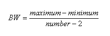
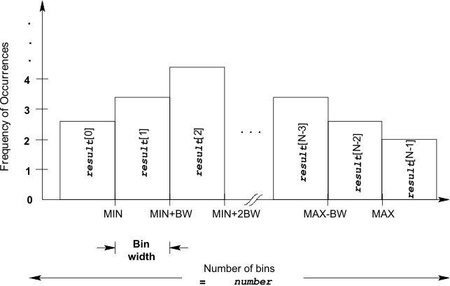

DSP_HISTOGRAM
For the specified array, this API sets up bins, and sort the elements of the specified array into the bins, then returns the results in histogram format.
The bin width (BW) is calculated as follows:

If number = 2, the maximum value has no meaning. The src elements are sorted into two bins: src elements less than minimum and src elements greater than or equal to minimum.
The results returned to result are the frequency of occurrence of the src elements in each bin. A result element is incremented each time one of the src elements is within the bin width as follows:
result Conditions
-------------------------------------------------------------------
1st element : SE < MIN
2nd element : MIN ≤ SE < MIN + BW
. .
. .
i th element : MIN+(i-2) × BW ≤ SE < MIN+(i-1) × BW
. .
. .
N-1 th element : MAX - BW ≤ SE < MAX
N th element : MAX ≤ SE
where
- SE is src element,
- MIN is minimum boundary,
- MAX is maximum boundary,
- BW is bin width,
- N is number of bins.
If the src is an integer type array, the src is converted to a double type array before processing by DSP_HISTOGRAM starts, so that it will be the same type as minimum and maximum values.
The following figure shows an example of DSP_HISTOGRAM operation.

To calculate the linearity errors of an A/D converter from the occurrences of output digital codes that resulted in the corresponding analog input levels, you should sort the output codes using this function before using the DSP_ADC_HISTOGRAM. For more information, see DSP_ADC_HISTOGRAM.
This API is defined in the header file /opt/hp93000/soc/prod_com/include/MAPI/libdsp.h.
Syntax
DSP_HISTOGRAM(ARRAY_I& src, ARRAY_I& result,
DOUBLE minimum, DOUBLE maximum,
INT number);
DSP_HISTOGRAM(INT *src, INT *result, INT size,
DOUBLE minimum, DOUBLE maximum,
INT number);
DSP_HISTOGRAM(ARRAY_D& src, ARRAY_I& result,
DOUBLE minimum, DOUBLE maximum,
INT number);
DSP_HISTOGRAM(DOUBLE *src, INT *result,
INT size, DOUBLE minimum,
DOUBLE maximum, INT number);I/O |
Parameter |
Description / Range |
|---|---|---|
I |
src |
Source array |
O |
result |
Sorted results number ≤ (size of result array). |
I |
size |
Number of elements to be processed 1 ≤ size ≤ 2097152 size ≤ (size of src) |
I |
minimum |
Minimum boundary for sorting |
I |
maximum |
Maximum boundary for sorting |
I |
number |
Number of bins 2 ≤ bin ≤ 2097152 |
Examples
Using DSP_HISTOGRAM in the ADC linearity test
int GlobalOverOn,debug;
int off_line ;
ARRAY_I adc_wave;
ARRAY_I histogram;
ARRAY_D adc_dnla,adc_inla;
LINEARtype adc_lin ;
ARRAY_I esites, csites; // Enabled Sites array
int nsites ; // max number of configured Sites
# define ADC_resolution 8 // Assuming 8-BIT ADC, that is: 256 different codes
INT miss_codes [(INT) pow (2,(DOUBLE)ADC_resolution)];
ON_FIRST_INVOCATION_BEGIN() ;
GET_TESTFLOW_FLAG("debug_analog", &debug);
GET_TESTFLOW_FLAG("global_overon", &GlobalOverOn);
GET_SYSTEM_FLAG("offline",&off_line);
GET_ENABLED_SITES(esites);
GET_CONFIGURED_SITES(csites);
nsites = csites.size() ;
CONNECT();
/*connect and activate analog module trigger line */
Routing.pin(AWG_pin).connect(TM::SINGLE);
AWG( AWG_pin ).enable() ;
/* perform the test */
DIGITAL_CAPTURE_TEST( 1.0 ) ;
/* deactivate analog module trigger line and disconnect the analog pin */
AWG( AWG_pin ).disable() ;
Routing.pin(AWG_pin).disconnect();
ON_FIRST_INVOCATION_END() ;
/* retrieve measurement data */
adc_wave = VECTOR (capture_variable).getVectors ();
/* perform computation */
DSP_HISTOGRAM ( adc_wave, histogram, 1, 255, 256);
try {
DSP_ADC_HISTOGRAM ( histogram, &adc_lin, adc_dnla, adc_inla, &miss_number, miss_codes, END_PT, min_code_size );
} catch (Error &exc) {
// an error occurred; most likely because the captured waveform contains only missing codes/is a straight horizontal line
ERROR_EXIT(TM::RETURN_TO_FLOW);
}if ( debug )
{
PUT_DEBUG ( AWG_pin, "Lin_adc_wave", adc_wave );
PUT_DEBUG ( AWG_pin, "Histogram", histogram);
PUT_DEBUG ( AWG_pin, "Lin_adc_dnl", adc_dnla );
PUT_DEBUG ( AWG_pin, "Lin_adc_inl", adc_inla );
cout << endl ;
}
/* compare computed result with limits and set pass/fail */
TEST( AWG_pin, "ADC_ILE", adc_lin.iamax);
TEST( AWG_pin, "ADC_DLE", adc_lin.damax);
This example performs an ADC linearity test. DSP_ADC_HISTOGRAM calculates the ILE and DLE of the result data. AWG_pin, capture_variable, min_code_size, miss_code and miss_number are parameters defined in this test method.
Sort the elements in an array
int array1[50], array2[6]; . . DSP_HISTOGRAM(array1, array2, 7, 1.0, 5.0, 6);
This example sorts the first seven elements of array1 into six bins. The function puts each element into its appropriate bin, counts the number of elements in each bin, and returns the counted results to array2.
The minimum_boundary value is 1.0 and the maximum_boundary value is 5.0. Elements that are less than 1.0 are sorted into the first bin. Elements greater than or equal to 5.0 are sorted into the sixth bin. The second bin contains the number of elements that are greater than or equal to 1.0, but less than 2.0. The third bin through the fifth bin follow the same logic as for the second bin, and the range for each bin is as follows:
Bin |
Range |
|---|---|
1 |
x < 1.0 |
2 |
1.0 ≤ x < 2.0 |
3 |
2.0 ≤ x < 3.0 |
4 |
3.0 ≤ x < 4.0 |
5 |
4.0 ≤ x < 5.0 |
6 |
5.0 ≤ x < 6.0 |
If array1 has the following elements:
array1[0] = 3.0 array1[1] = 3.1 array1[2] = 3.5 array1[3] = 5.0 array1[4] = -0.5 array1[5] = 1.2 array1[6] = 1.9
and so on
then, this function sorts them, and returns the following counted results to array2:
array2[0] = 1 ( [4] ) array2[1] = 2 ( [5] and [6] ) array2[2] = 0 (nothing) array2[3] = 3 ( [0], [1], and [2] ) array2[4] = 0 (nothing) array2[5] = 1 ( [3] )
Functional changes
- Introduced before SmarTest 6.3.2